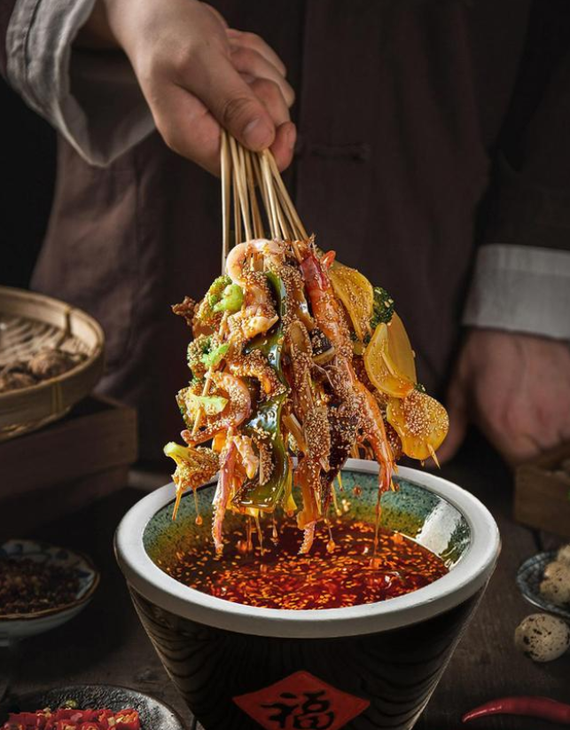
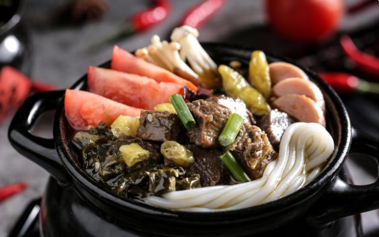
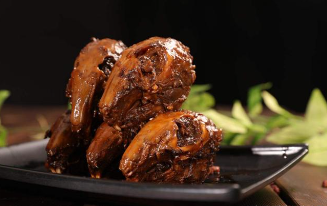
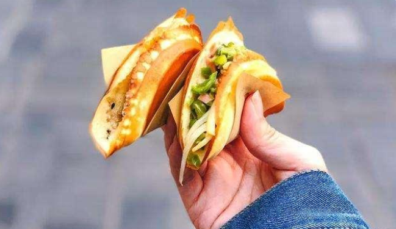
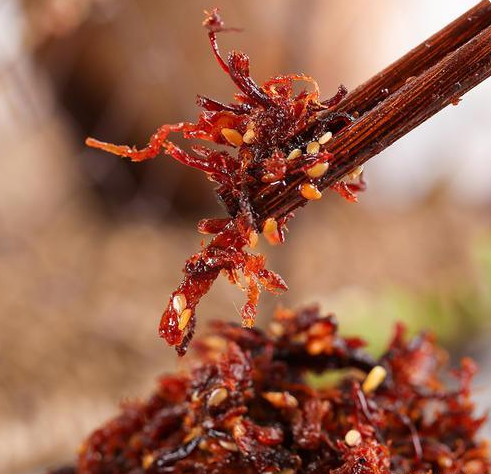
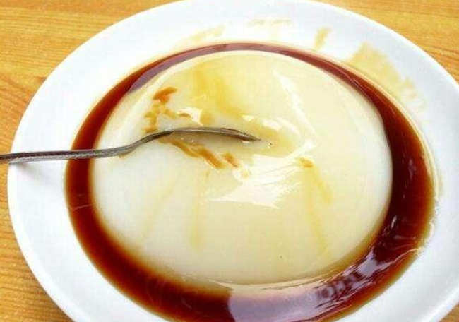
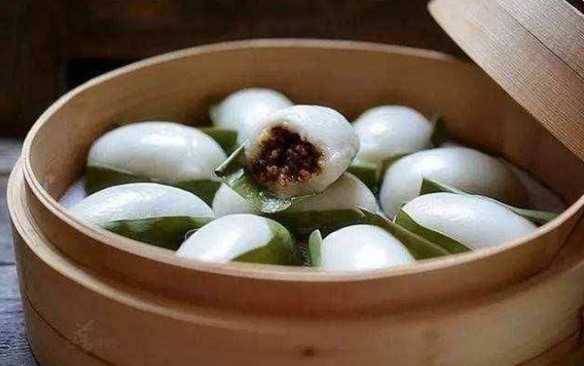

曾经有个段子：一个外国人立志三年吃遍全中国的美食，首站来到成都，两年过去了，他还在成都！虽然有些许的夸张，但足以看出，作为美食之都的成都，汇聚天下数不清的美食。今天，就跟大家唠唠成都传统小吃。
1、钵钵鸡
作为四川传统名小吃，从清代流传至今已有上百年的历史。有皮脆肉嫩，麻辣鲜香，甜咸适中的特色，食用方便，多种口味可选择，配以特色鸡汤饭即可休闲品味，亦可权作一餐。

2、罐罐米线
作为酸辣煮义的招牌，味型丰富。他们家的泡菜是正宗四川味，土坛窖藏，酸爽十足；汤底也很浓郁，一锅一汤，营养美味。

3、双流老妈兔头
兔兔那么可爱，麻辣的更好吃哦~肉质细嫩的兔头，味道纯正、回味醇香的麻辣调料，成就味道纯正的老妈兔头。

4、蛋烘糕
是四川省成都市的一道传统小吃，始于清代，如今成都街头仍有许多小贩，挑担销售，香喷喷、金灿灿，绵软滋润，外皮酥脆，营养丰富，老少打尖最宜。

5、灯丝牛肉
是由牛后腿腱子肉切片后，经腌、晾、烘、蒸、炸、炒等工序制作而成。因肉片薄而宽、可以透过灯影、有民间皮影戏之效果而得名，已有100多年历史，味麻辣鲜脆，细嚼之，回味无穷。

6、凉糕
主要原料为大米、井水、红糖，味美香甜沙软，食之清爽可口，还有解毒排脓、利水消肿、清热去湿、健脾止泻的功效。

7、叶儿粑
是川西农家清明节、川南春节的传统食品，选料考究，工艺精细，具有色绿形美、细软爽口的特点，用糯米粉面包麻茸甜馅心或鲜肉咸馅心，置旺火蒸，清香滋润，醇甜爽口，荷香味浓，菜分两味，咸鲜味美。
